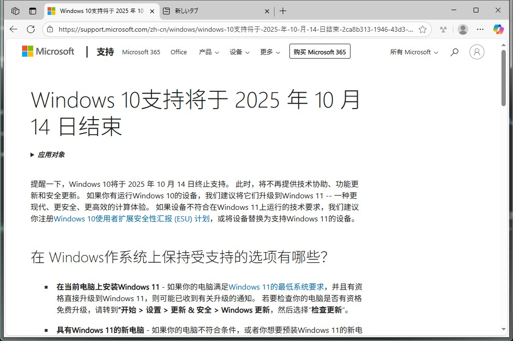
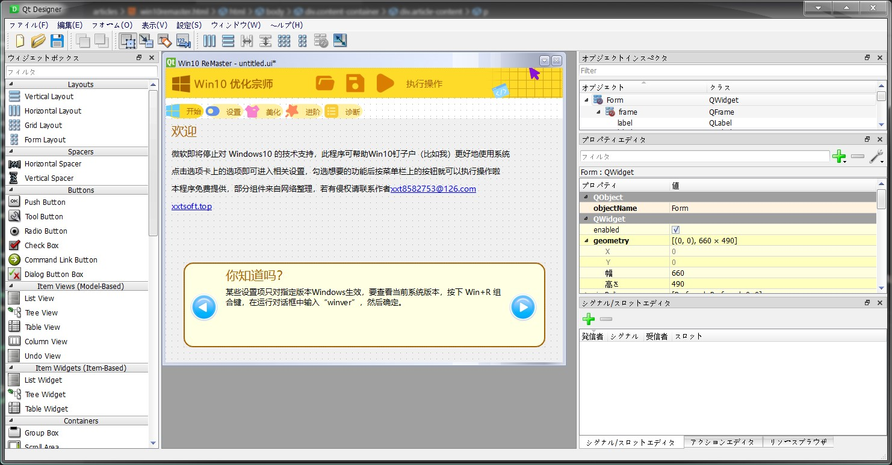

之前想说的，因为军训耽搁了，现在发出来给大家看一下
众所周知今年是2025年，Win10在2015年发布，已经服役了10个年头，微软将在今年结束对Win10的支持，但因为性能或稳定性等种种考虑，不少人不想甚至无法更新到Win11，成为了像我一样的Win10钉子户。为了帮助这些人，我制作了这个程序
说真的，我刚开始做时以为这个程序就前端要有点设计功底，后端直接os.system("start xxx")几乎无难度，然而我发现我错了，批处理是真尼玛难写
但是。。。问题不大
做的比较烂，完善后再放下载&源代码。。。
